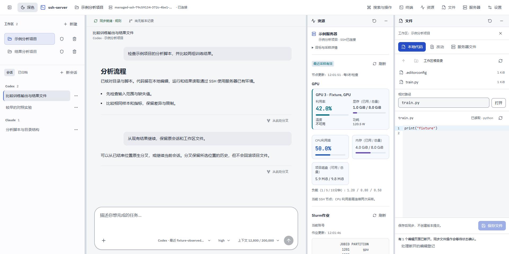
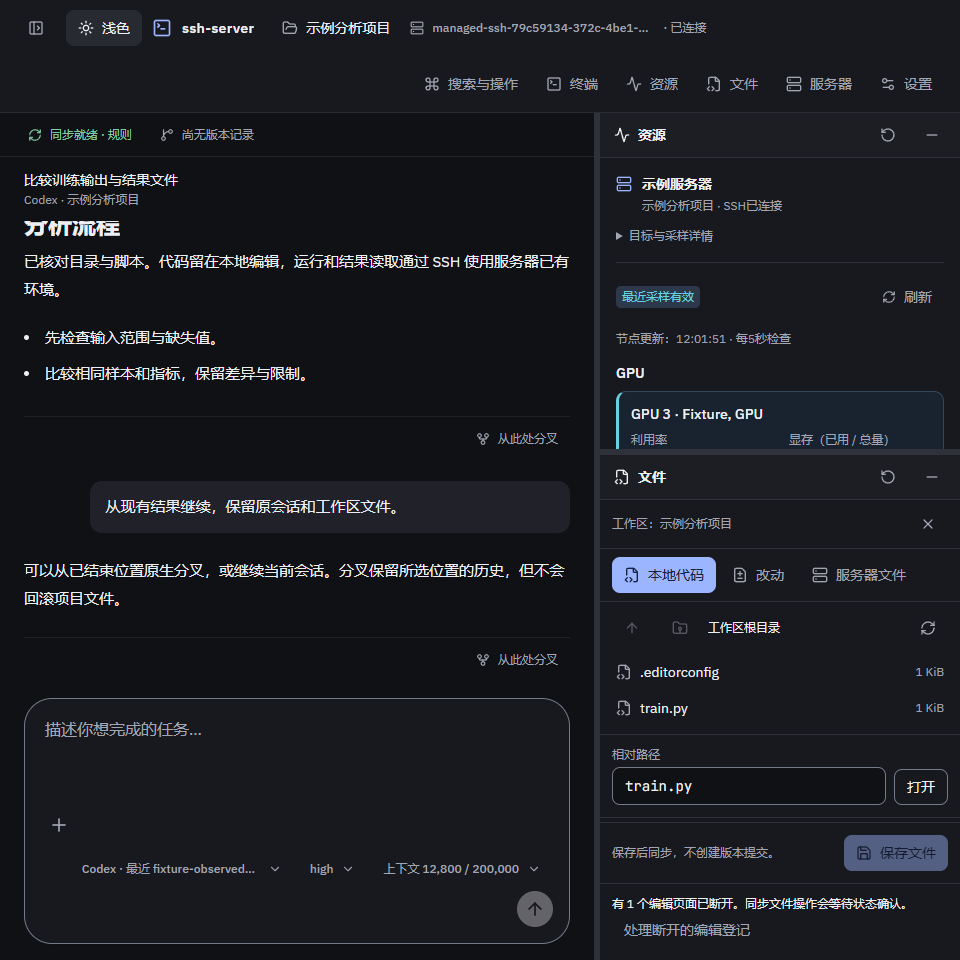
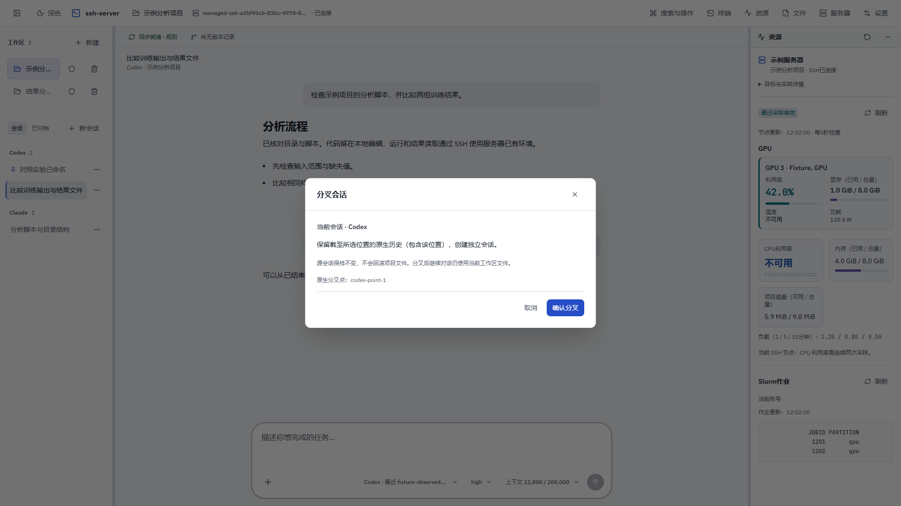
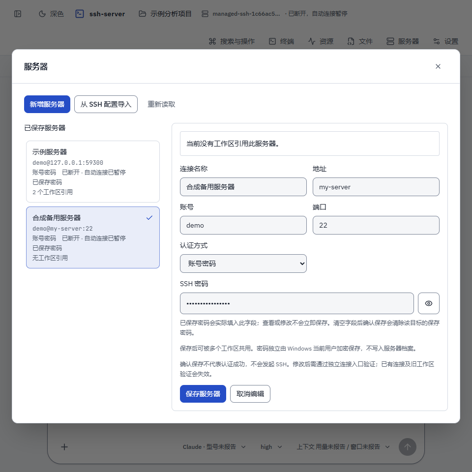

D42 停靠工作台 · 验收截图
工作区与会话、对话、资源、文件自适应停靠；资源与文件独立开关，分隔线可调。
以下为本轮隔离 Edge 验收的合成数据画面，不代表真实模型、用户凭据或集群运行结果。 查看验收范围与证据边界
41项浏览器交互、4组顶栏专项回归及人工视觉检查已通过。以下4张代表图来自修复后的最终构建，可点击查看原尺寸。




工作区与会话、对话、资源、文件自适应停靠；资源与文件独立开关，分隔线可调。
以下为本轮隔离 Edge 验收的合成数据画面，不代表真实模型、用户凭据或集群运行结果。 查看验收范围与证据边界
41项浏览器交互、4组顶栏专项回归及人工视觉检查已通过。以下4张代表图来自修复后的最终构建，可点击查看原尺寸。



